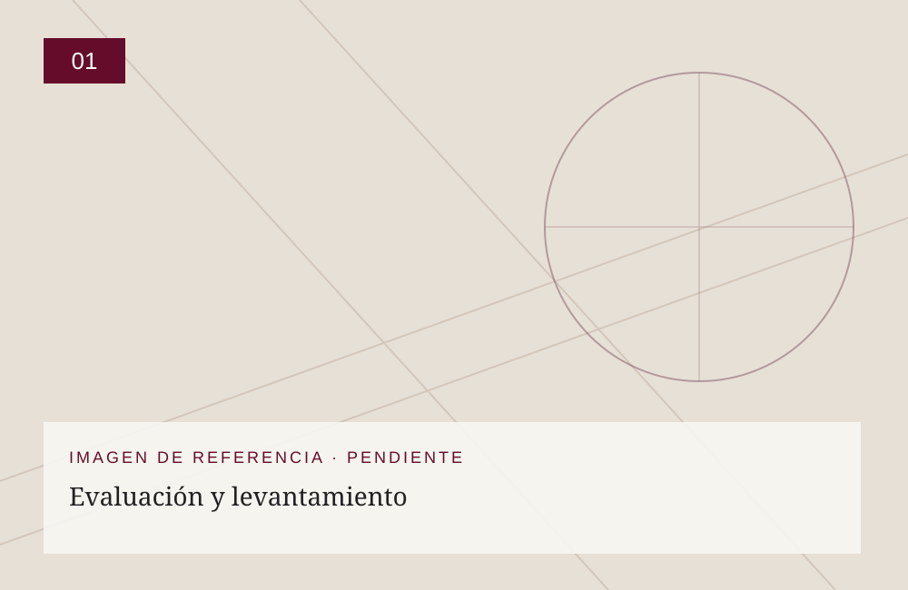
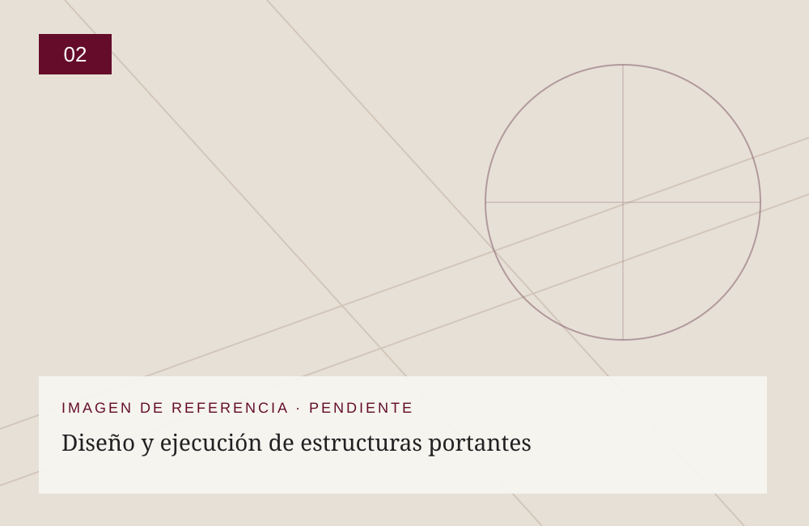
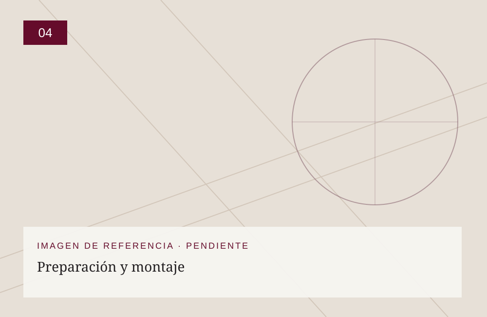
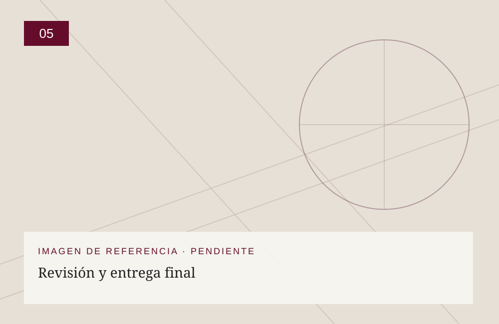

01
Evaluación y levantamiento
Verificamos dimensiones de los vanos, condiciones arquitectónicas y estado de los soportes.
NUESTRO OFICIO / INSTALACIÓN
Diseñamos y ejecutamos estructuras portantes en hierro, madera, aluminio o concreto, y también aprovechamos o adaptamos estructuras existentes de distintos materiales. Incorporamos sistemas de refuerzo para limitar las deformaciones derivadas del peso propio, las dimensiones de los paneles o el paso del tiempo.

EL PROCESO
Las imágenes de las etapas son referencias gráficas temporales. Se reemplazarán por fotografías reales del taller sin alterar el contenido ni la estructura de la página.

Verificamos dimensiones de los vanos, condiciones arquitectónicas y estado de los soportes.

Construimos estructuras nuevas o adecuamos las existentes según los requerimientos del proyecto.
Definimos e incorporamos elementos de soporte y refuerzo para limitar deformaciones y desplazamientos de los paneles.

Preparamos apoyos, fijaciones y protecciones y colocamos los vitrales en su posición definitiva.

Comprobamos la estabilidad, las fijaciones, los encuentros entre materiales y los acabados; realizamos la limpieza final.